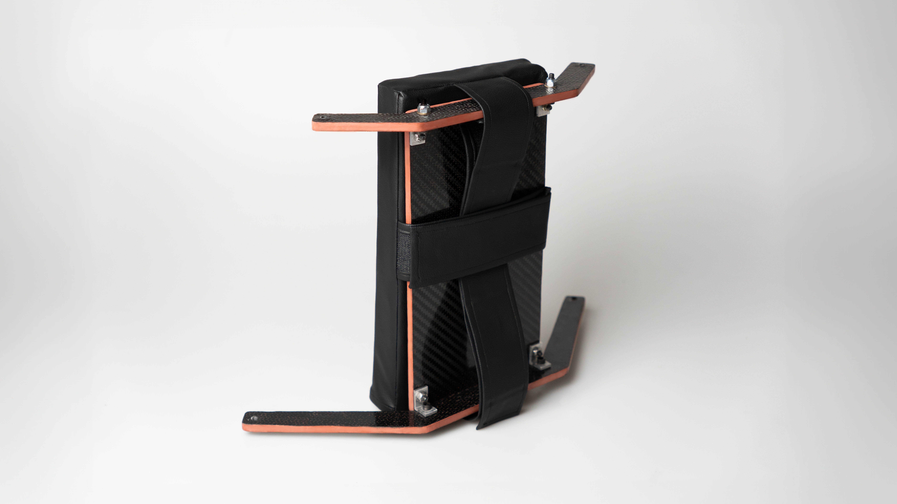
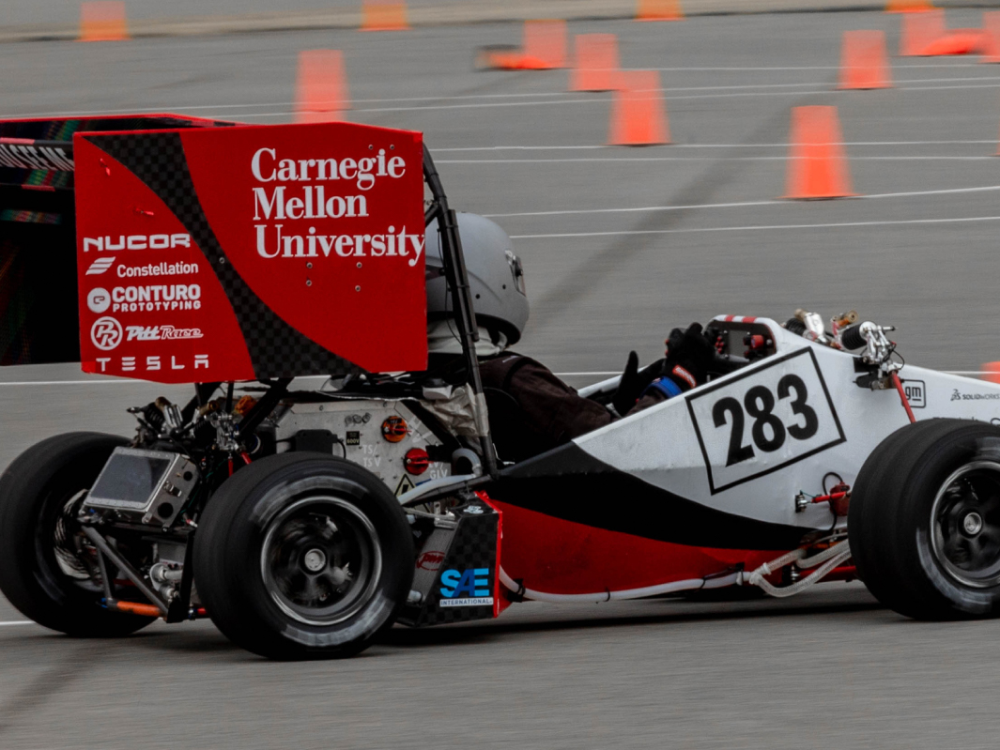
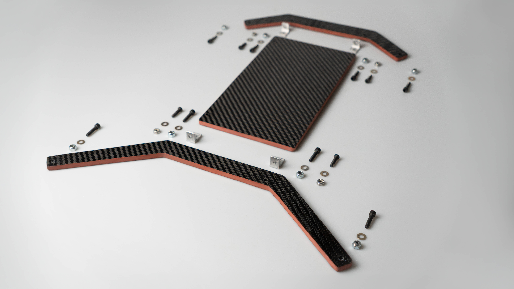
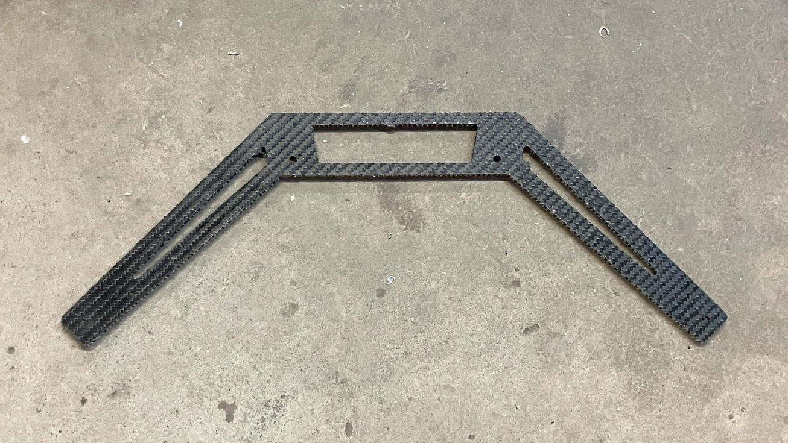
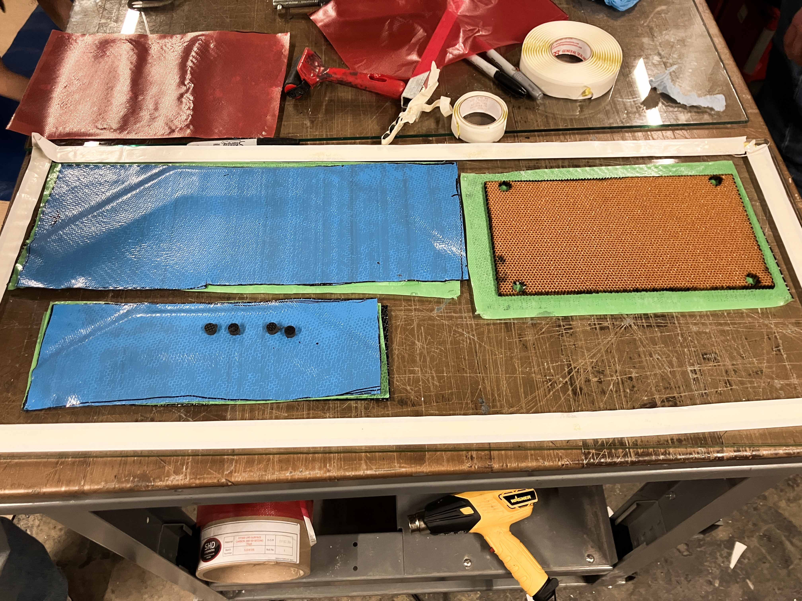
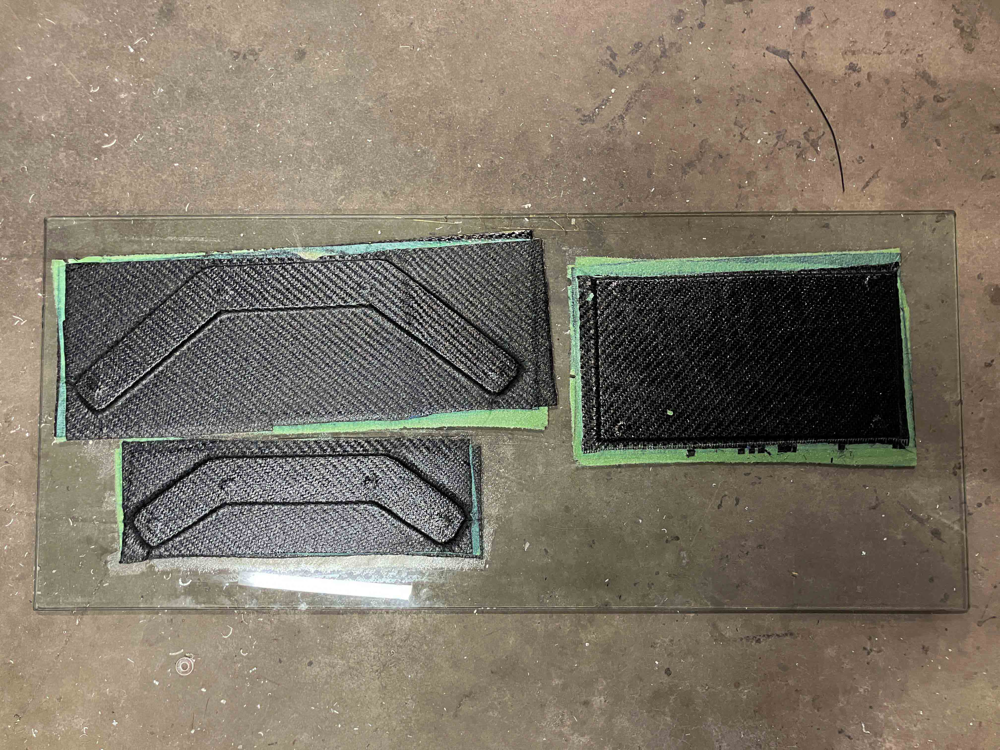
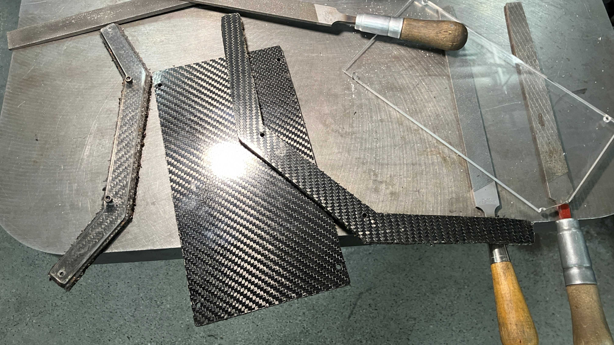
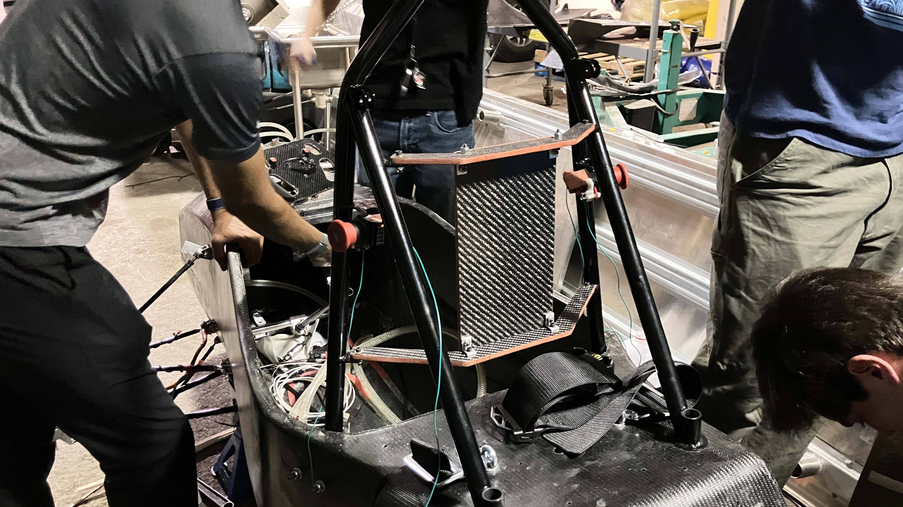
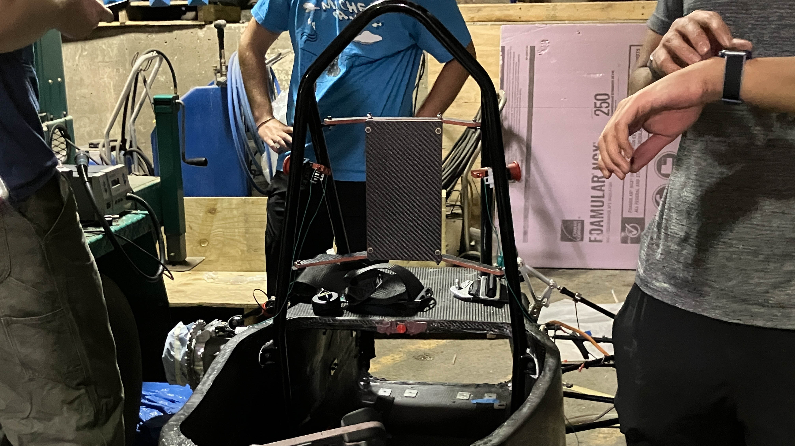
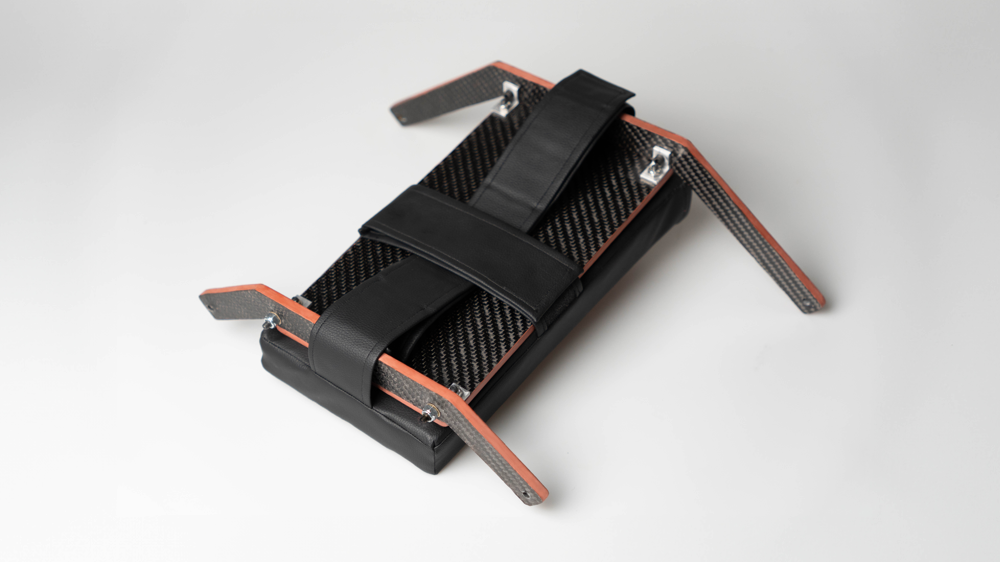

Domains
-
Design for Manufacturing (DFM)
Computer-Aided Engineering (CAE)
User Research
Ergonomic Testing
Fabrication
Presentations/Briefing
Tools
-
SolidWorks
ANSYS FEA
CNC Machining
Carbon Fiber Layup
Welding
Waterjet Cutting
Synopsis
-
Led the complete redesign of the carbon fiber headrest structure on a Formula SAE race car, achieving a weight reduction of 50%.

Redesigning the Headrest System.
As one of the few industrial designers in an engineering club, I was tasked with leading the complete redesign of the carbon fiber headrest structure, acheiving a weight reduction of 50%, while increasing strength by 20%.
I collaborated closely with interdisciplinary teams, learned ANSYS structural FEA, and applied DFM principles while working with pre-preg carbon fiber, an entirely new material for this application.

Carnegie Mellon Racing builds an electric race-car from scratch every year to compete in FSAE competitions.
Ultra Lightweight
The entire headrest system weighs just 254g because of its pre-preg carbon fiber construction, a significant weight reduction compared to wet carbon or aluminum alternatives. Pre-preg carbon fiber combines exceptional strength with minimal weight—crucial for maximizing on-track performance.
Safety First
Fully rules compliant and designed to meet all safety regulations,
this headrest system withstands up to 900 N of force in a rearward direction, and 300 N in a lateral or vertical direction,
validated in both ANSYS Mechanical and physical stress testing.
Designed for Easy Maintenance
Repairability and servicability is crucial when designing for a component that withstands wear and tear on the track. The disasembly process is simple and allows for easy part replacement.

Assembly or disassebly takes less than 2 minutes.

The Task
-
Design Objectives and Goals
1. Minimize weight to meet the race car’s 475lb limit and 4.8s skidpad time.
2. Maximize adaptability and ergonomics for a range of drivers over at least 125km of track testing.
3. Ensure robustness, reliability, and ease of repair.
Compliance with Safety Regulations
The headrest is a key component of the driver interface and safety system, serving as a major point of connection to the car and protecting the driver’s head during rollovers alongside the roll cage.
Every component is designed to fully comply with the 2025 FSAE Rulebook's safety guidelines.
Design Process
-
Concept Development
I opted for a one-piece arm design for its simplicity and durability. I also explored incorporating cutouts into the carbon fiber structure to further reduce weight.
Validating Designs with ANSYS FEA
Hand calculations, combined with ANSYS Mechanical, were used to ensure the early-stage design's strength.
Physical stress tests on carbon fiber pieces were also conducted to validate the material specifications.
Parametric Design in SolidWorks
The headrest dimensions are fully adjustable to accommodate the constant changes in the roll-hoop during early design stages.
Working with large project files also enhanced my skills in tolerances, parametric modeling, and file management in SolidWorks.
RAMSIS Ergonomic Simulations and User Testing
Optimized driver comfort and ensured driver interface system cohesion (steering wheel, seat, pedals) through ergonomic simulations and user testing with drivers of
various heights on an ergonomic test rig.
Addressed pain points in the previous headrest system by conducting observational testing and gathering user feedback.
Design Presentatons & Reviews
My role as team lead frequently involved interdisciplinary collaboration, validating ideas with other cross-functional system teams and stakeholders through design reviews.
I presented Preliminary Design Reviews (PDR) to ensure feasibility and alignment with requirements, followed by a Critical Design Review (CDR) to confirm the final design.
Design Challenges and Iterations
-
Setbacks and last-minute design changes were inevitable, offering valuable lessons in creating more manufacturable, robust, and adaptable solutions.
Final Prototype: V1
Cutout Dimensioning Issue.
Prototype 1 featured adaptable geometric cutouts that reduced weight while maintaining strength.
However, a drastic change in the width and angle of the roll cage (on which the headrest attaches to) dimension led me to develop Prototype 2, an alternate version of the cutout design.
Final Prototype: V2
Pre-preg carbon waterjet cutting delamination issue.
During physical testing of Prototype 2, the waterjet cutter caused delamination of the pre-preg carbon fiber and the nomex core.
Although pre-preg carbon fiber is lighter compared to wet carbon fiber, it is not suitable for waterjet cutting intricate designs. I decided to fabricate using a router instead, leading to several design iterations.
Additionally, it was later discovered that the cutouts reduced the lengths of the individual fibers in the composite layer, reducing the strength of the structure.
Regrettably, cutouts were abandoned after discovering this issue.

A physical test piece of the V2 design which did not pass the 100kg physical stress test due to delamination caused by waterjet cutting.
Fabrication
-
An understanding of DFM principles, combined with the earlier design decisions made in CAD, played a critical role in selecting the most efficient and cost-effective manufacturing process.
Pre-Preg Composites Layup Process
1.Mold release agent is applied to glass panel to prevent sticking.
2.Pre-preg carbon fiber(12K) is cut to size, then laid down at the correct fiber orientation.
3.Nomex honeycomb core is laser cut and sandwiched between the carbon fiber for strength.
4.Waterjet cut solid carbon fiber inserts for reinforcing mounting points are inserted into pre-cut holes in nomex.
5.Vacuum bagging and gum tape is used to seal the layup at 30psi during the curing process.
6.A curing oven is used to cure the layup.

Blue - protection layer. Green - film adhesive for better bonding.

The layup after curing process.
Welding Jigs
The headrest is connected to 4 tabs welded to the roll cage on the race car. These tabs need to be at precise locations, necessitating custom welding jigs to hold the tabs in the exact location during welding.
The jigs were manually milled to exact specifications.
CNC Milling L Tabs
CNC milling was used in conjunction with manual milling for the aluminum L tabs on the headrest. Fully strength tested like the carbon fiber pieces, the tabs play a crucial role in the structure's rigidity.
Routing and Finishing
Due to the issue of pre-preg carbon fiber delaminating from the nomex core during waterjet cutting, I manually cut out the carbon fiber pieces using a router and offset acrylic templates. The pieces were later hand-finished with files.

Mounted on Monocoque
-



Special thanks to CMR members Josh, Kai, Karis, Jack, Felicia, and Ufuk for making this project possible!